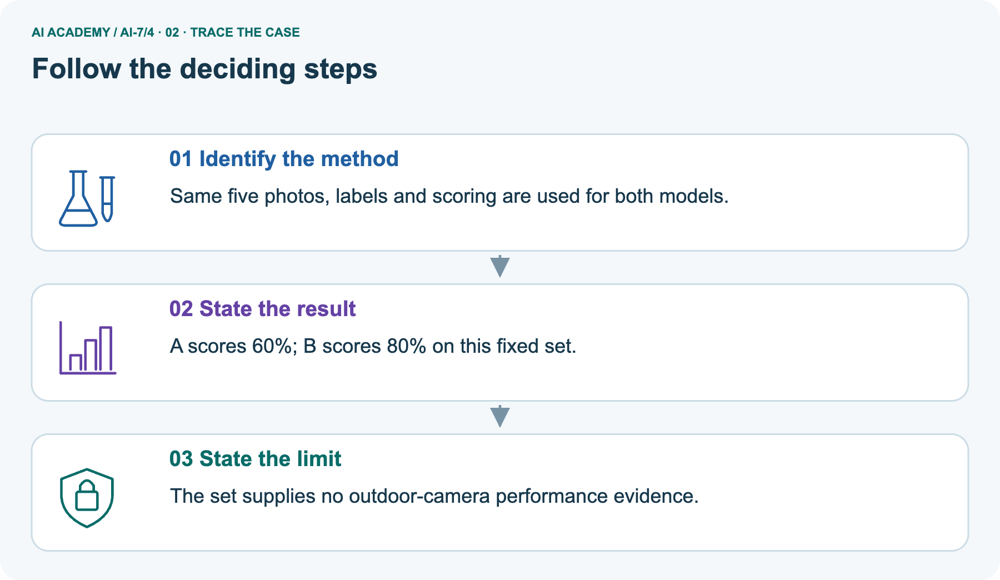
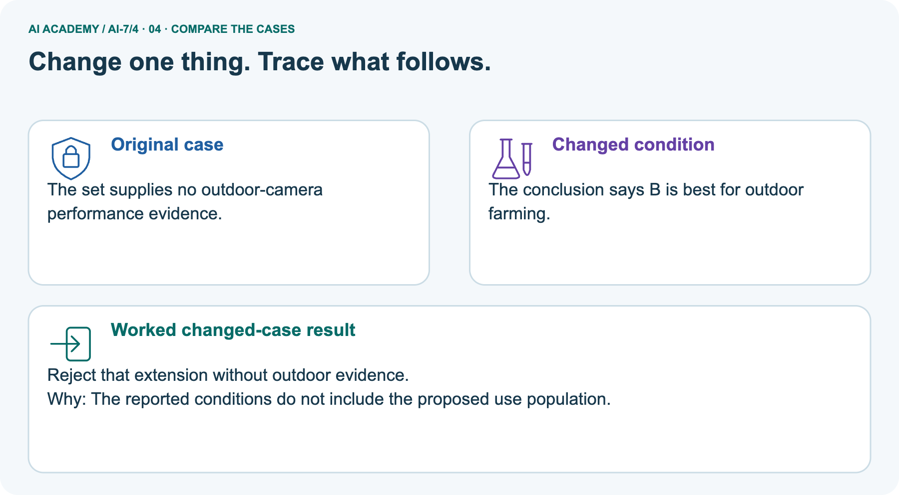
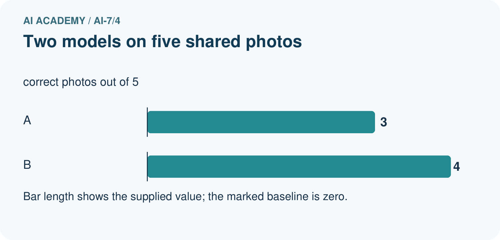
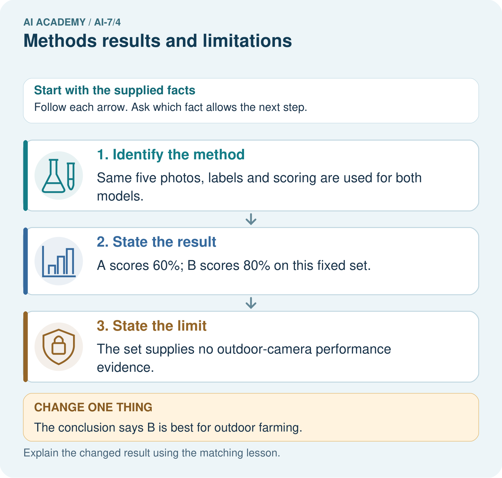
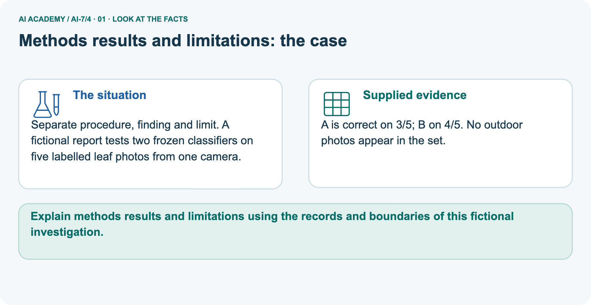
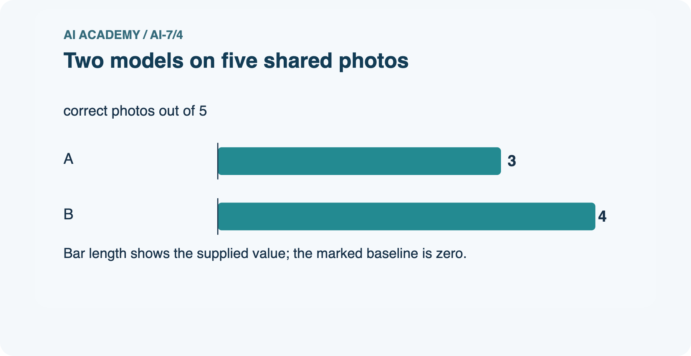
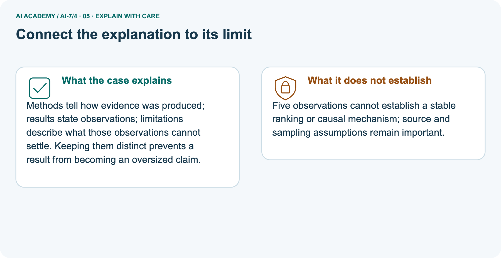
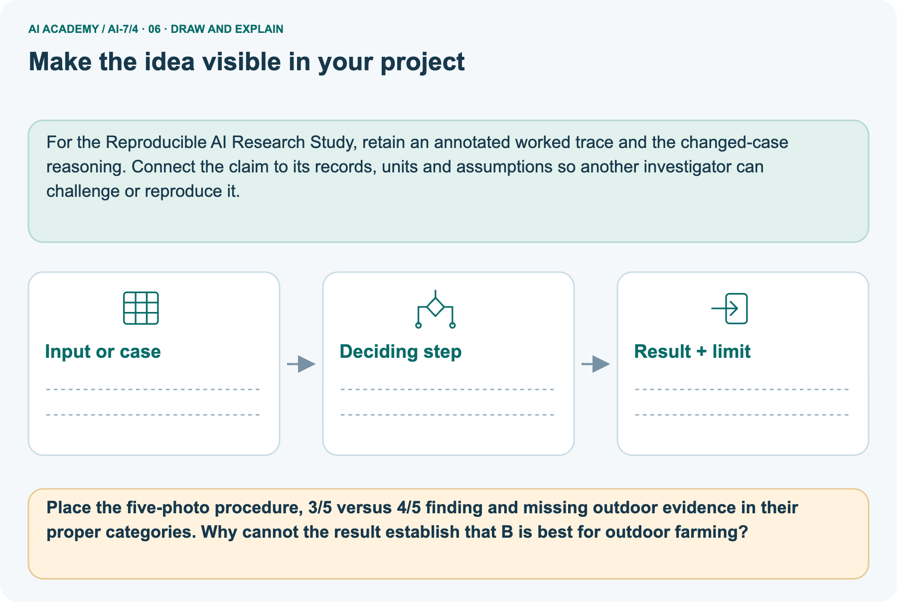

AI Academy · Level 7 · Grade 12 · Week 4 · Student lesson
Methods results and limitations
Learn to understand, design, build, test and explain AI systems responsibly.
Project: Reproducible AI Research Study
THE CONNECTED WEEK
State what was done. Report what was found. Bound what it means.
Separate methods, results, limitations and proposed mechanisms with reasons and legitimate overlap.
Keep one habit: Role contract → twenty-query classification → five-photo picture → interpretation probes → passage rewrite → independent reviewer/cutoff case.
Main lesson · Section 1
Keep procedure, finding and interpretation limits connected
Classify each statement by its role without forcing every sentence into only one box.
Learning goals
I can explain the mechanism and terminology of methods results and limitations.
I can apply the stated procedure to a new case with a traceable result.
I can identify an assumption or limitation and design a revealing follow-up.
Retrieve claim scope and inspected original evidence
Close your notes first. A rough first answer helps us choose the right starting point; it is not a score for your ability.
Without opening the old lesson, explain one key idea from Finding primary research. Give an example and a mistake that the idea helps you avoid.
Without opening the old lesson, explain one key idea from A question that evidence can answer. Give an example and a mistake that the idea helps you avoid.
After trying, check the relevant lesson or ask your teacher. Change the part of your explanation that the evidence shows was wrong.
Prerequisite and starting response
Recall Finding primary research. Explain why a recorded result needs its input conditions and evidence source before it can support a claim.
End goal
Explain methods results and limitations using the records and boundaries of this fictional investigation.
Earlier wording, alternatives and picture transcripts
Your learning target
Remember before reading
This week you will practise:
Explain the mechanism and terminology of methods results and limitations
Apply the stated procedure to a new case with a traceable result
Identify an assumption or limitation and design a revealing follow-up
Retrieve what you already know
This week’s end goal
Main lesson · Section 2
Define the role each statement plays in the argument
A limitation bounds a result rather than erasing the reported observation.
Begin with the three-sentence fictional report
Imagine a report says “We tested twenty fictional questions; sixteen passed; no real students used the system.” These statements answer different questions: what was done, what was observed and what the observations cannot settle. Keep them linked. A method detail may also explain a limitation.
A proposed reason for the result is an explanation to investigate, not another observation simply because it sounds plausible.
Define methods, results and limitations
Methods state what was done; results state observed outcomes; limitations state restrictions on interpretation. Mixing them hides missing evidence.
Complete passage and classification contract
| Statement role | Complete classroom distinction |
|---|---|
| Method | What was done: cases, versions, scoring, conditions and data collection |
| Result | What the supplied record reports, with its metric and denominator |
| Limitation | What that procedure/evidence does not establish or what uncertainty remains |
| Proposed explanation | A candidate mechanism to test; not an additional observed result |
| Main supplied passage | Used 20 fictional queries; 16 passed; real student use not studied |
| Main arithmetic | 16/20 = 80% on those fictional queries |
| Missing details | Full pass rubric, case records and sampling protocol are not supplied by the short passage |
| Separate picture | Two frozen classifiers, same five labelled leaf photos, one camera, no outdoor photos |
| Picture result | A 3/5 = 60%; B 4/5 = 80%, difference 20 percentage points |
| Scope | Fictional reported evidence, not a new model experiment, classroom-learning study or outdoor deployment evaluation |
Name supplied and missing evidence
Earlier wording, alternatives and picture transcripts
Begin by writing the question the procedure is intended to answer. Identify the information already supplied, the information it will produce and the information still missing.
These are constructed classroom examples; they do not require live accounts, private records or an external service. Do not treat a plausible explanation as a measured outcome.
Main lesson · Section 3
Trace the role and support of each sentence
Tie the result to its procedure and denominator before interpreting it.
Original statement-role procedure
Classify each statement by role and link results to the procedure and denominator. A proposed mechanism is an explanation to test, not an extra observation.
Complete main classification and faithful rewrite ledger
| Main supplied statement | Role and reason | Faithful use |
|---|---|---|
| Used twenty fictional queries | Method and scope: defines what was evaluated | Describe those query cases, not real learners |
| Sixteen passed | Reported result; needs total and pass rule | 16/20 = 80% on the supplied cases |
| Real student use was not studied | Limitation and study-scope detail | No classroom effectiveness result supplied |
| “It worked because students learned faster” | Unsupported proposed explanation/outcome | Neither student use nor learning speed was measured |
| Full rubric and raw case identities absent | Evidence gap in the short summary | Ask for them; do not invent reproducibility details |
State the missing method details
Before applying the procedure, write its units, denominator or decision boundary where relevant. A partner should be able to repeat each step using the same inputs.
If a required input is absent or violates the stated contract, record that condition explicitly instead of quietly replacing it with a convenient value.
Explain the visual
Point to the input, the deciding step and the result in this week’s visual. Explain the same step in ordinary words. A picture helps when you can say what each part represents.
Earlier wording, alternatives and picture transcripts
Methods results and limitations — evidence trace
Connect the picture and the explanation
Main lesson · Section 4
Predict an outdoor-farming conclusion from indoor-only evidence
A broader application needs evidence that the supplied study does not contain.
Current task and response
Statements: used 20 fictional queries; 16 passed; real student use was not studied. Show the intermediate steps and give the conclusion with its scope.
Predict the stronger outdoor claim
Change: The conclusion says B is best for outdoor farming.
Check after predicting
Prediction: Reject that extension without outdoor evidence.
Reason: The reported conditions do not include the proposed use population.
Earlier wording, alternatives and picture transcripts
Compare a familiar case with a changed case
Change one thing in the pictured case
Main lesson · Section 6
Read the leaf-photo method, observed count and missing outdoor evidence
The correct local finding stays valid when its scope is stated.
Main twenty-query passage and checked roles
Statements: used 20 fictional queries; 16 passed; real student use was not studied.
First is method/scope; second result 16/20 = 80%; third limitation. No classroom effectiveness result is supplied.
Compare the intermediate evidence with the final statement. Explain why each number or decision follows from the stated inputs.
The conclusion belongs to this scenario and procedure; changing the inputs, evaluation population or authority can change what it establishes. Retain the raw record so a later revision can be compared honestly.
Separate five-photo inputs and full role classification
Separate procedure, finding and limit. A fictional report tests two frozen classifiers on five labelled leaf photos from one camera.
A is correct on 3/5; B on 4/5. No outdoor photos appear in the set.
The picture is a separate five-photo evaluation. Method: two frozen classifiers use the same five labelled leaf photos and scoring, from one camera, with no outdoor photos. Result: A is correct on 3/5 = 60%, B on 4/5 = 80%, so B is higher by 20 percentage points on this fixed set. Limitation: outdoor conditions, other cameras and broader sampling are not evaluated.
“B is best for outdoor farming” goes beyond the available comparison. The five-photo result neither proves that B will generalize nor proves it will fail outdoors. It also does not identify an internal causal mechanism.
| Separate picture statement | Role | Evidence-faithful wording |
|---|---|---|
| Two frozen classifiers; same five labelled photos, one camera | Method | State versions, same photos, labels and scoring conditions |
| A 3/5 and B 4/5 | Reported result | A 60%, B 80%; B higher on these five cases |
| No outdoor photos | Method/scope detail and limitation | Outdoor performance unassessed |
| B best for all outdoor farming | Unsupported conclusion | Replace with the fixed-set comparison and explicit missing outdoor evidence |
Trace procedure, finding and scope limit



Read the picture one step at a time
Methods tell how evidence was produced; results state observations; limitations describe what those observations cannot settle. Keeping them distinct prevents a result from becoming an oversized claim.
Predict “best for outdoor farming”
Change one thing: The conclusion says B is best for outdoor farming. Predict the result before checking the explanation. What remains the same?
Check after predicting



Explain ranking, mechanism and generalization limits
Five observations cannot establish a stable ranking or causal mechanism; source and sampling assumptions remain important.
Read the labelled picture: Place the five-photo procedure, 3/5 versus 4/5 finding and missing outdoor evidence in their proper categories. Why cannot the result establish that B is best for outdoor farming?
Earlier wording, alternatives and picture transcripts
Learn from the worked case
Cover the result before checking it. Say what is given, choose the procedure, and follow one step at a time. Then uncover the result and explain your first mismatch. Ask why a step is allowed, not only what number it produces.
A pictorial worked case: Methods results and limitations
The facts we will use






Why this result follows
What this example does not establish
Main lesson · Section 7
Audit role overlap and unsupported explanatory claims
Differentiate “not studied” from “shown not to work”.
Core interpretation qualification and failure analysis
A limitation should constrain a claim rather than be hidden in unrelated prose.
A useful check asks what would make the reasoning fail. Distinguish a failure to execute the declared procedure from a weakness in the procedure itself.
The first may require a correction; the second requires an explicitly revised method and new evidence. Preserve unsuccessful cases so an improved result cannot hide the original problem.
Complete role-overlap and evidence-gap probes
| Role-reading probe | Expected interpretation |
|---|---|
| Count with no denominator | Incomplete result statement; locate total and scoring |
| Same cases and labels | Method comparison condition, not the result itself |
| One reviewer assigned all labels | Method detail; agreement across reviewers not assessed |
| Single reviewer means labels must be wrong | Unsupported; limitation is not proof of error |
| No outdoor cases tested | Bounds interpretation; does not establish outdoor failure |
| A plausible mechanism explains a difference | Hypothesis, not an extra observation |
| One statement serves two roles | Name both with reasons rather than forcing a single label |
| Methods paragraph too brief to reproduce | Request missing details; do not invent settings |
| 80% on fictional queries | No measured real-student learning effect follows |
Guided repair and explanation
A report omits this qualification: A limitation should constrain a claim rather than be hidden in unrelated prose. Explain how omitting it could change a reader's interpretation, and write an accurate replacement.
Earlier wording, alternatives and picture transcripts
Locate the earliest unsupported step
Main lesson · Section 8
Practise linking the sentence to the evidence it uses
Give a reason for its role and a faithful alternative when needed.
Current explanation and guided check
Explain the weekly mechanism in your own words. Use the worked scenario to name its input, decision rule and output.
Supported W2 trace
Use workbook W2 for the connected example “Methods results and limitations”. First fill the input and rule boxes. Try the middle steps before asking for a hint. After a hint, try the next step yourself.
| Plan | Do | Check |
|---|---|---|
| What is given? Which rule or procedure applies? | Record each intermediate step. | Does the result follow? What remains unknown? |
Explain your trace to a partner. Your partner points to one step to check. Swap roles on the next case. Each person writes their own explanation.
Individual scope check
Use the worked case for Methods results and limitations. Proposed explanation: “The worked result establishes every future case”. Decide whether this explanation is supported.
Point to the step or supplied fact that decides; explain your repair if needed.
Answer on your own before discussion. If you are unsure, say which step you need help with.
Picture response
Place the five-photo procedure, 3/5 versus 4/5 finding and missing outdoor evidence in their proper categories. Why cannot the result establish that B is best for outdoor farming?
Reserve the selected cutoff/relevance/reviewer case
This is supported practice. Keep the separately named independent case for an attempt before feedback.
Earlier wording, alternatives and picture transcripts
Practise with less help: Trace the worked case
Check your reasoning
Explain the picture
Main lesson · Section 9
Complete a passage annotation and evidence-faithful rewrite
Use classification to improve the argument rather than memorize labels alone.
Current twenty-query passage investigation
Statements: used 20 fictional queries; 16 passed; real student use was not studied. Show the intermediate steps and give the conclusion with its scope.
Complete annotation, arithmetic and rewrite protocol
| Complete supplied-passage investigation | Expected written evidence |
|---|---|
| Copy the main three statements | 20 fictional queries; 16 pass; real student use not studied |
| Annotate method/result/limitation | Name primary role and any scope overlap with reasons |
| Calculate the reported proportion | 16/20 =80%; retain the supplied outcome and denominator |
| Write a faithful main summary | 80% passed on these fictional queries; no classroom-learning evidence supplied |
| Classify separate picture facts | Same five photos/labels method; 3/5 vs4/5 result; no outdoor cases limitation |
| Audit the proposed outdoor conclusion | Replace with fixed-set result and missing-outdoor evidence |
| Add a mechanism hypothesis separately | Mark proposed explanation and a future test, not a newly observed cause |
| Record evidence status | Supplied-passage inspection/paper arithmetic; no live model or participant study performed |
Expected evidence and unperformed-study limits
Use the fully supplied passages and counts for an annotation-and-rewrite investigation. Underline the procedure, circle the measured numerator/denominator and mark the boundary on interpretation. Explain any sentence with two roles. The main twenty-query passage and separate five-photo comparison are different examples and must not share denominators.
No raw classifier outputs, reviewer-agreement data or real learner outcomes are supplied. This investigation needs no code or outside study; record your actual annotations and leave additional experiments unperformed.
Evidence ledger and reflection
| Record | Your evidence |
|---|---|
| Given input and fixed rule | |
| Prediction before checking | |
| Actual result, or “not run” | |
| First mismatch and one explanation | |
| Boundary or missing input and expected response |
On paper, trace the supplied procedure. If code is provided, predict before running it in a local practice file. Never write an expected answer as though it were an observed run.
Before trying: what do I expect, and why? While trying: which step could first go wrong? Afterwards: what did I actually observe, and what should change? Keep “not run” if you only traced the procedure.
Earlier wording, alternatives and picture transcripts
Predict, investigate and preserve the evidence
Plan → try → check
Main lesson · Section 14
Try alone: cutoff, relevance fraction and one reviewer
Classify the statements and explain overlapping roles.
Complete selected independent task
Statements: fixed cutoff 5; 12/15 relevant returned items; judgments came from one reviewer. Classify.
First attempt and support record
Attempt this case before feedback. Record any help. Earlier examples below are further practice; a case already practised with feedback cannot establish fresh transfer.
Feedback after trying
Attempt the independent case before hints. Record whether you worked alone, used a hint or followed a model. After feedback, fix the first unsupported step and explain why it changed.
A later check uses a changed case, not a copied answer.
Earlier wording, alternatives and picture transcripts
Independent case: Apply a new case independently
Attempt this without hints
Statements: fixed cutoff 5; 12/15 relevant returned items; judgments came from one reviewer. Classify.
Record support used: none, hint or teacher explanation. After feedback, a different case is needed to demonstrate independence.
Use feedback to improve
Main lesson · Section 11
Save method, reported results, limitations and hypotheses separately
Connect each claim back to its supplied evidence.
Project task and artifact
Add a labelled methods results and limitations evidence sheet to Reproducible AI Research Study. Show how you can explain the mechanism and terminology of methods results and limitations.
Use the supplied fictional case and keep its inputs, intermediate steps, calculation or prediction, and limitation. Connect this record to last week’s record; a matching answer without a trace is insufficient.
| Project evidence | Record |
|---|---|
| Component and version | |
| Inputs permitted at prediction time | |
| Trace and comparison with earlier work | |
| Failure, limit and human review |
Actual passage inspection and remaining evidence gaps
For the Reproducible AI Research Study, retain an annotated worked trace and the changed-case reasoning. Connect the claim to its records, units and assumptions so another investigator can challenge or reproduce it.
Earlier wording, alternatives and picture transcripts
Evidence for your project
Main lesson · Section 16
Explain the result without changing its outcome or scope
A limitation makes the interpretation precise rather than inventing a new finding.
Retrieve and explain
Close your notes. Explain this goal in your own words: Explain the mechanism and terminology of methods results and limitations
Plan a changed-case return
If you are unsure, return to the worked picture and explain one arrow. If you are ready, change an input or assumption and justify your prediction.
Save your workbook evidence. At the next review, try a different case before opening your old answer.
Reference bank and extra practice
Choose the reference that helps your next step.
Reference · Use research vocabulary precisely
Reference · Section 5
Reference · Use research vocabulary precisely
Connect each term to the question, comparison, measurement or evidence.
Vocabulary and your explanation
| Word | Meaning |
|---|---|
| Method | The procedure used to obtain observations |
| Result | A reported observation or calculated outcome |
| Limitation | A restriction on what results establish |
Extra challenge · Explain a stronger case
Reference · Section 10
Extra challenge · Explain a stronger case
Choose the next challenge after the main route.
Explain,repair and extend
Explain the weekly mechanism in your own words. Use the worked scenario to name its input, decision rule and output.
A report omits this qualification: A limitation should constrain a claim rather than be hidden in unrelated prose. Explain how omitting it could change a reader's interpretation, and write an accurate replacement.
For the worked scenario, propose one additional case that could reveal a failure, describe its expected outcome before running it, and explain what would need to remain fixed for a fair comparison.
Do not reuse W4 as a new final test after receiving feedback.
Explain → apply → challenge
Reference · Check the research reasoning and its limits
Reference · Section 12
Reference · Check the research reasoning and its limits
Use after practice; reserve the selected independent case for its first attempt.
Current explanation and response
Complete the supported workbook tasks before attempting W4 independently. Record any hints or help used. After feedback, use the teacher's fresh retry rather than copying the earlier answer.
For a project, select a relevant new case, predict the outcome from the declared rule and preserve the result alongside any revision.
For the worked scenario, propose one additional case that could reveal a failure, describe its expected outcome before running it, and explain what would need to remain fixed for a fair comparison.
Do not reuse W4 as a new final test after receiving feedback.
Extra practice · Revisit the complete trace
Reference · Section 13
Extra practice · Revisit the complete trace
Predict before reading the supplied steps.
Complete trace and evidence
Complete evidence record
Methods results and limitations — evidence trace
Follow the input through the stated procedure to its result. Cover the result first, predict it, then explain every intermediate step. The text/table accompanies the figure so the example can be read without colour.
Reference · The earlier route checklist
Reference · Section 15
Reference · The earlier route checklist
Use one main route rather than repeating the lesson.
Targets,route and first prediction
Start with this question: Separate procedure, finding and limit. A fictional report tests two frozen classifiers on five labelled leaf photos from one camera.
| By the end, I can | How I will show it |
|---|---|
| Explain the mechanism and terminology of methods results and limitations | Explain the deciding step, show a trace or test, and state one limit. |
| Apply the stated procedure to a new case with a traceable result | Explain the deciding step, show a trace or test, and state one limit. |
| Identify an assumption or limitation and design a revealing follow-up | Explain the deciding step, show a trace or test, and state one limit. |
Remember → watch and explain → try with help → investigate → try independently → keep project evidence. Your teacher may spread this lesson across several classes.
Keep your first prediction. Compare it with what the evidence shows and explain any change.
Extra practice · Predict,check and repair
Reference · Section 17
Extra practice · Predict,check and repair
Keep supported feedback separate from the independent case.
First supported question and optional hint
Separate procedure, finding and limit. A fictional report tests two frozen classifiers on five labelled leaf photos from one camera.
Which labelled step matches this detail? The set supplies no outdoor-camera performance evidence.
1. State the result
2. State the limit
3. Identify the method
Hint if needed: Read the steps in the pictorial case. Match the supplied detail to the stage that performs or records it.
Practice 1: explain the deciding evidence
Check after the first attempt
After your attempt, compare with the supported explanation: State the limit The set supplies no outdoor-camera performance evidence.
Methods tell how evidence was produced; results state observations; limitations describe what those observations cannot settle. Keeping them distinct prevents a result from becoming an oversized claim.
Changed-case question and optional hint
Changed-case practice: The conclusion says B is best for outdoor farming. Which conclusion is supported by the supplied facts?
1. Reject that extension without outdoor evidence.
2. This one example guarantees correct results for every future input.
3. We can decide the result without examining the changed input or the procedure.
Hint if needed: Use the changed condition and the deciding step in the pictorial trace. The answer must say what follows from those facts.
Practice 2: explain the deciding evidence
Check after the changed attempt
After your attempt, compare with the supported explanation: Reject that extension without outdoor evidence. The reported conditions do not include the proposed use population.
Repair and retain the record
Review Finding primary research (ai-7/3). Goal: Explain the mechanism and terminology of finding primary research. Short practice: Separate what the blog claims from what the original report records.
Which methods and denominator must be inspected, and what status is honest if the original report is unavailable?. Return to this week and explain what you changed.
Review A question that evidence can answer (ai-7/1). Goal: Explain the mechanism and terminology of a question that evidence can answer. Short practice: Which proposed diagram question has a measurable outcome?
Name its versions, six-case denominator and fixed scoring, then explain why giving only B easier tasks spoils the comparison.. Return to this week and explain what you changed.
Use Download completed work in the hosted lesson to export your answers, reflections, practice feedback and code-run evidence. Open the HTML copy to read or print it.
Drafts stay in this browser when storage is available; clear drafts on a shared device.
Earlier wording, alternatives and picture transcripts
Use this supported practice once, in the browser or on paper. Keep the reserved independent assessment for a separate first attempt before teacher feedback.
Repair a missing building block
Keep your completed work
Reference · Six-picture concept journey
Reference · Section 18
Reference · Six-picture concept journey
Choose the picture that supports the current explanation.
01. Methods results and limitations: the case



Separate procedure, finding and limit. A fictional report tests two frozen classifiers on five labelled leaf photos from one camera. Supplied facts: A is correct on 3/5; B on 4/5. No outdoor photos appear in the set.
Point to the given fact that matters most. Explain why it matters.
02. Follow the deciding steps
Identify the method: Same five photos, labels and scoring are used for both models. → State the result: A scores 60%; B scores 80% on this fixed set. → State the limit: The set supplies no outdoor-camera performance evidence.
Point to each numbered stage and explain which recorded input it uses.
03. Two models on five shared photos



Two models on five shared photos. Units: correct photos out of 5. A: 3. B: 4.
Read the labels and values. Explain the relationship the model shows.
04. Change one thing. Trace what follows.
Original case: The set supplies no outdoor-camera performance evidence. Changed condition: The conclusion says B is best for outdoor farming. Expected result: Reject that extension without outdoor evidence.
Reason: The reported conditions do not include the proposed use population.
Predict before checking the worked changed-case result. Name what changed and what the supplied facts allow you to conclude.
05. Connect the explanation to its limit



Methods tell how evidence was produced; results state observations; limitations describe what those observations cannot settle. Keeping them distinct prevents a result from becoming an oversized claim.
Limit: Five observations cannot establish a stable ranking or causal mechanism; source and sampling assumptions remain important.
Explain the case, then point to a limit on the claim.
06. Make the idea visible in your project



For the Reproducible AI Research Study, retain an annotated worked trace and the changed-case reasoning. Connect the claim to its records, units and assumptions so another investigator can challenge or reproduce it.
Draw your input, deciding step, result and limit. Supported question: Place the five-photo procedure, 3/5 versus 4/5 finding and missing outdoor evidence in their proper categories.
Why cannot the result establish that B is best for outdoor farming?
Draw your project trace and justify the deciding step using evidence.